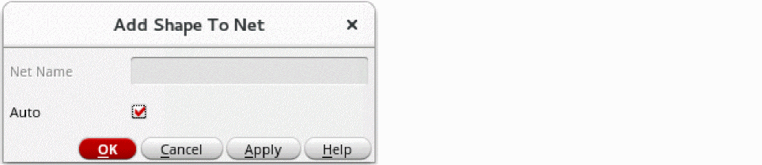

Adding and Deleting Shapes on Nets
The Add Shape To Net command lets you add selected shapes to nets that are attached to pins. An instance or mosaic can be added to a net as long as there is at most one terminal on the net. An instance cannot be added to a net if it contains instTerms. A shape cannot be added to more than one net. Terminals and nets are not deleted when the physical pin shape associated with them is deleted.
The Delete Shape From Net command lets you delete selected shapes from a net. Terminals and nets are not deleted when the physical pin shape associated with them is deleted.
Adding Shapes to a Net
- On the layout canvas, select one or more shapes.
-
Choose Connectivity – Nets – Add Shape.
The Add Shape to Net form appears.
 - Do one of the following:
- Click OK to close the form and add the shapes to the nets.
When there are zero-area dot pins on the edge of the shape to be added, the pin is used only if one of its access directions points toward the center of the shape.
Removing Shapes from a Net
- Select one or more shapes to be removed from a net.
-
Choose Connectivity – Nets – Remove Shape.
The Remove Shape From Net form appears. - If the net name shown is not the net you want the shapes to be deleted from, type the correct net name.
- Click OK to close the form and delete the shapes from the specified net.
Related Topics
Return to top